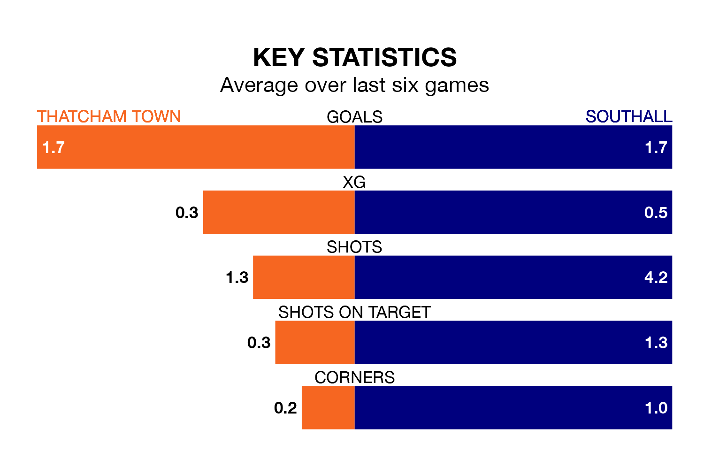

Southall travel to Thatcham Town on late Tuesday in the Isthmian League Division One South Central.
The visitors come into the game on the back of a draw in their last match, having tied with Corinthian-Casuals 1-1 away.
Thatcham, meanwhile, lost their last match, 4-1 against Northwood.
With 63 goals in 29 games so far this season, Southall are the league's third-highest scorers with 2.2 goals per game. And they are conceding fewer than average, letting in 32 goals at a rate of 1.1 per game.
Thatcham are also above average scorers, with 1.8 goals per game, compared to a league average of 1.7. They have conceded 1.5 goals per game.
The away team are third in the table after 29 games, of which they have won 19 and drawn four, earning 61 points.
Town are five places behind Southall in eighth, with 13 wins and four draws putting them on 43 points.
The hosts are in mixed form in the Isthmian League Division One South Central, with three wins and three losses from their last six games.
With two wins and a draw over that period, Southall's form is slightly worse – they have taken seven points from 18, compared to Thatcham's nine.
In the last three years, Thatcham and Southall have played each other on three occasions. They won one each, and they drew once.
Their last meeting was on October 18, when Southall won 1-0 at home.
Updated: 12:18 (UTC), 19/02/24